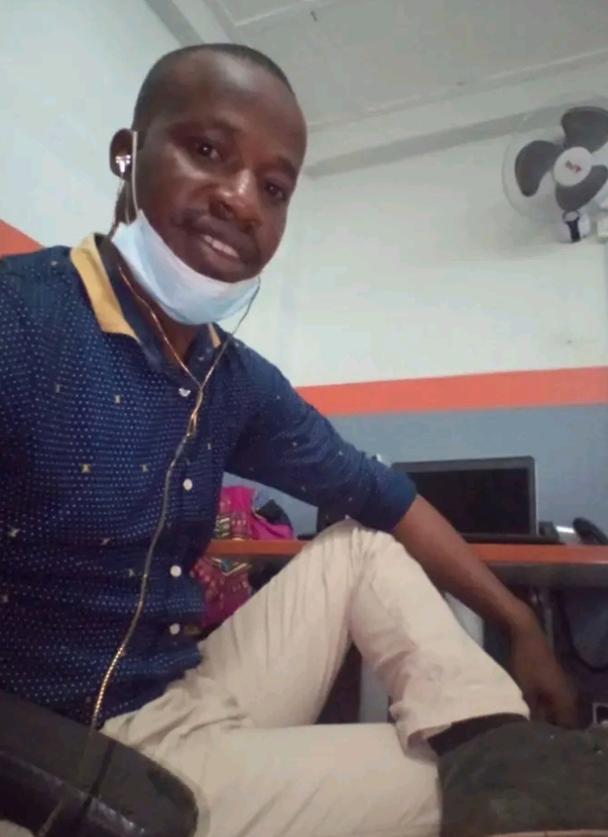
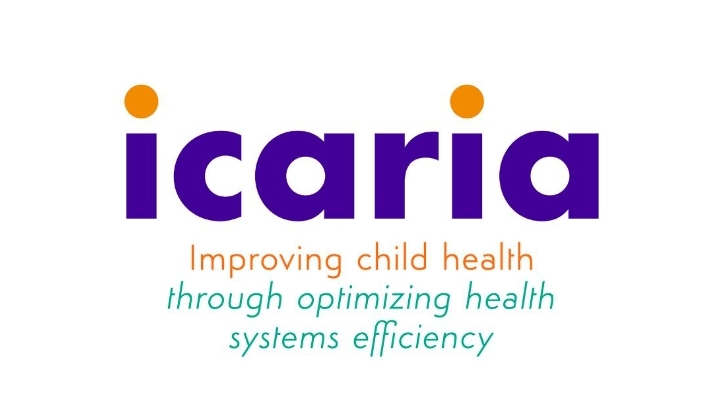

Ibrahim Salieu Kamara
Electronics | and IT Egineeer | Former IT Engineer at Qcell SL | Data office at COMAHS/ ISGLobalSierra Leone · Contact info
10 mutual connections: GeeksforGeeks, freecodecamp & 8 others


About
I am a graduate with a Bachelor Degree in Electrical
and Electronics Engineering. I have worked in cutting edge
IT Tech industries, Health Sector, ranging from Network Technician,
Network Administrator, Data Officer, etc. In those aspects, I was managing
the up running of the network devices, data query and manipulation, data cleaning
and result presentations for further decision making, etc.
With these skills, I am physically, logically, and dynamically fit
to work in any institution or production environment.
Experience

October 2022 — Present · 1.3 Years
ICARIA | COMAHS | ISGLobal
a). Project Data Officer
- Data Checks and Validation
- Data Cleaning
- Hardware Device Configurations
- Source Document Management
- Maintain Protocol Standard
- Advice and Make Corrections for Health Workers
April 2021 — Nov. 2022 · 1.6 Years
Qcell SL Sierra Leone
b). 1. Assistant IT Engineer
- Network Cable Managements
- Manage and maintain uptime and downtime of Network Switchports' Status
- Printers, PCs, Network device troubleshooting and Configurations
- Layer 2 and Layer 3 Network Device securities for PCs, Printers, and Wi-Fi Routers
- Creating users email accounts and users using Active Directory (AD) Domain Controller
- FTP connections to the remote servers using FileZilla
- Software installations, MS Office, Windows installations and license updates
- Checking SQL Database Instances and Update and retrive Database Backups
- Setting up Zoom Meetings
b). 2. Network Operation Center (NOC) Engineer
- Monitoring Network alarms for all QCELL Cell Towers across the country
- Analyze 2G, 3G and LTE (4G) Networks and prepare report for further analyses
- Monitoring and capturing reports generated from Auto Generators, Backup Batteries
September 2019 — April 2021 · 1.6 Years
Tiwai Memory Masters
Network Technician | Internship Student
- LAN, MAN, and WAN Networks Installations
- Fiber and CCTV Installations
2023 — Present
Self Entrepreneurship
Web Development
- Web Hosting
- Finding Website Domains for Clients
- Building Web Sites for Clients
- Potential of Building Dynamic Web Applications